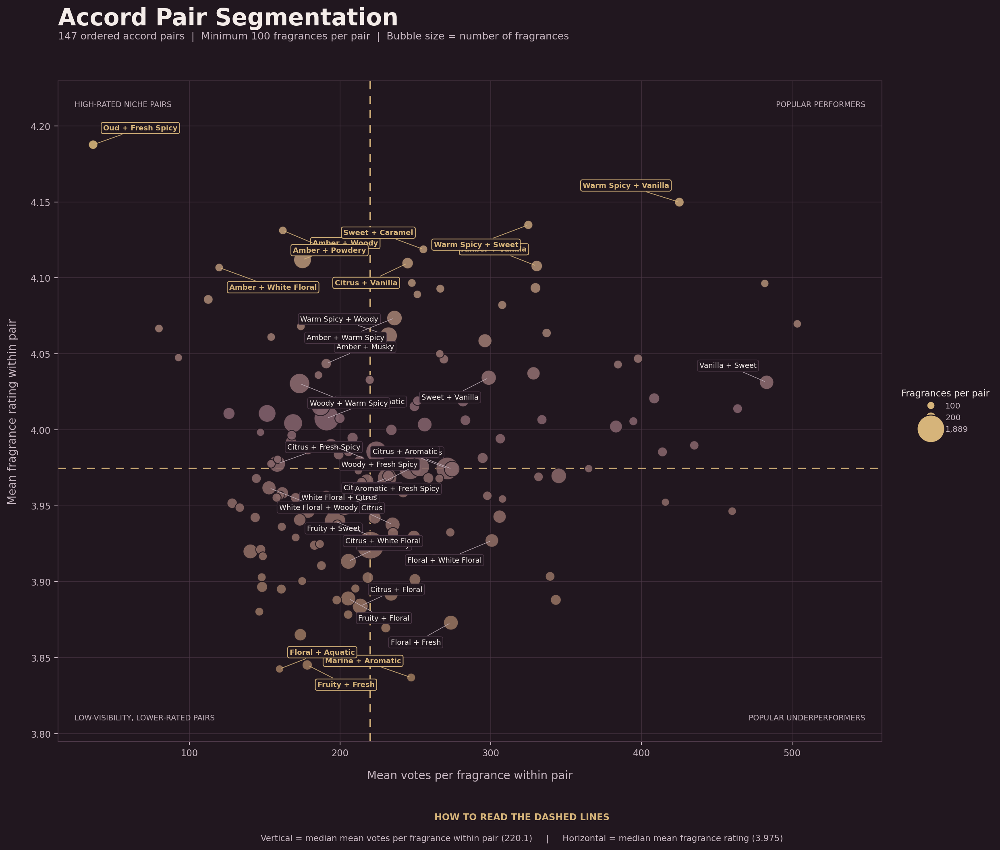
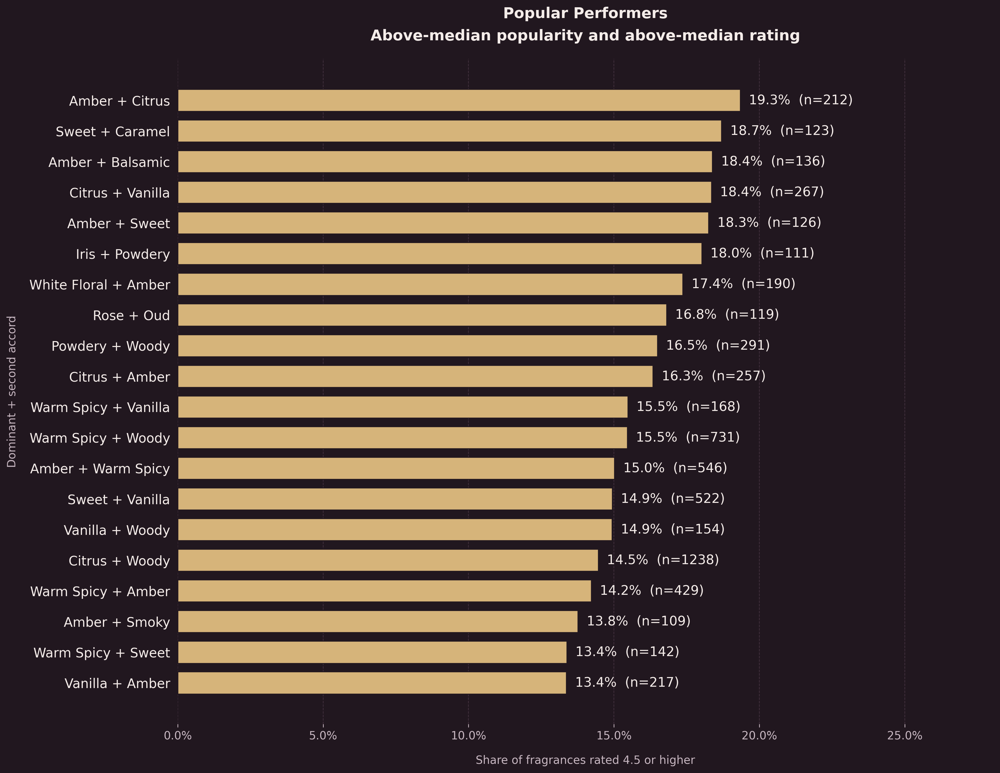
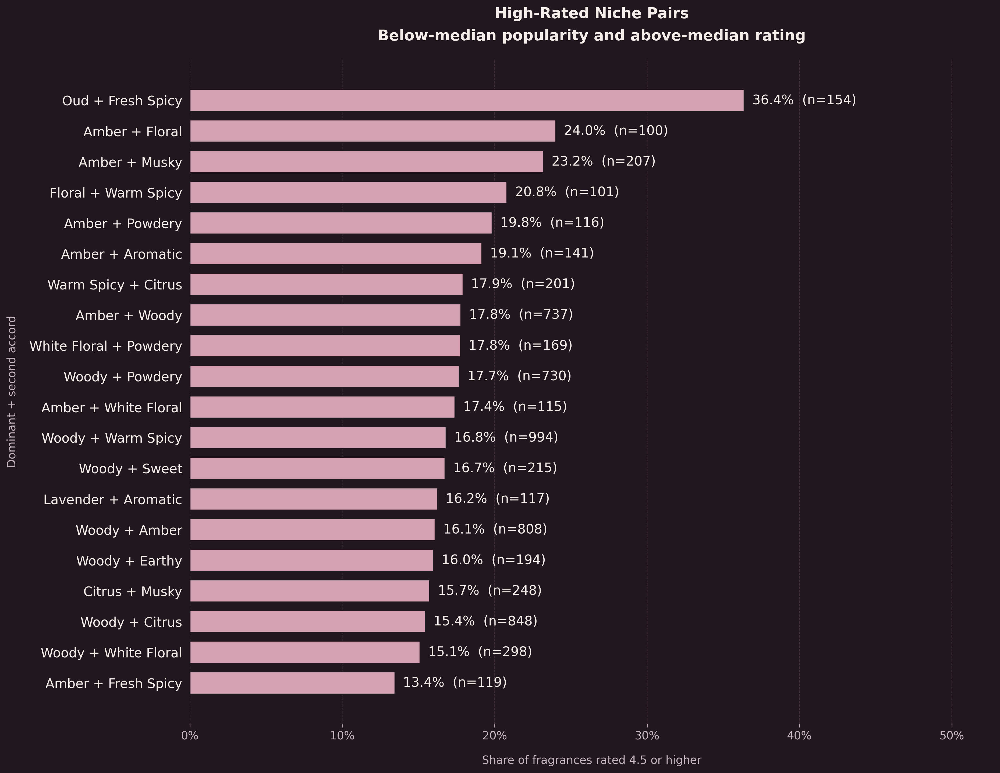
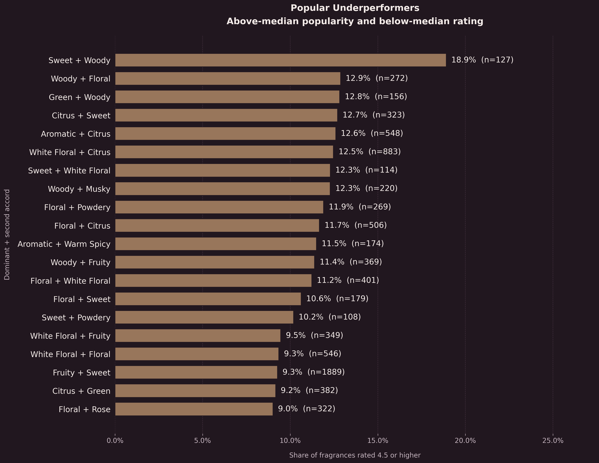
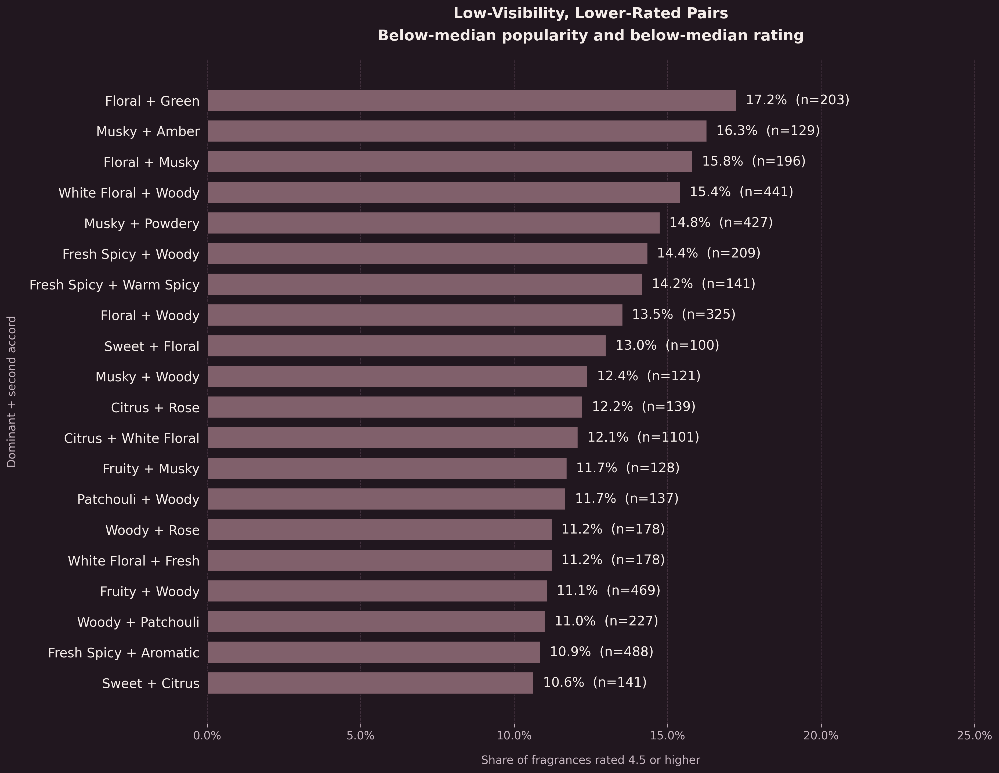
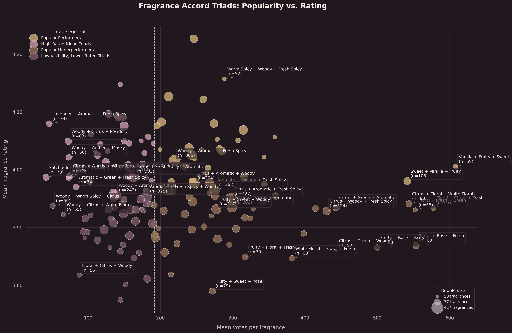
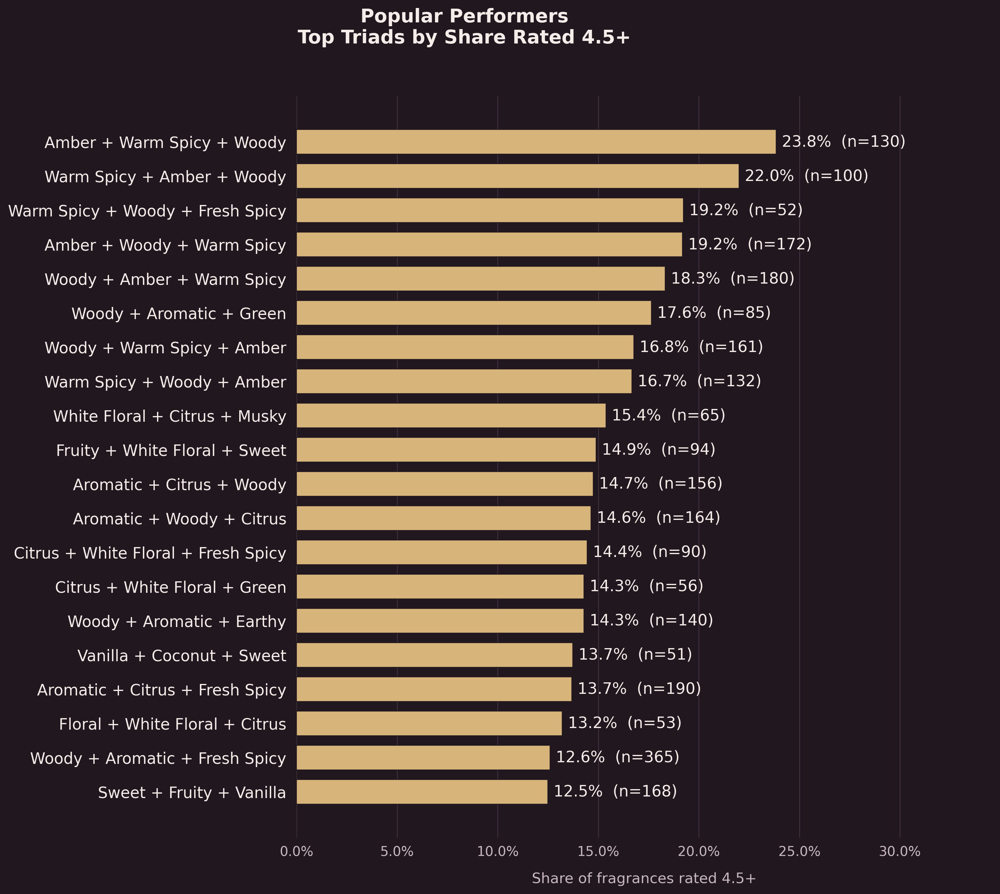
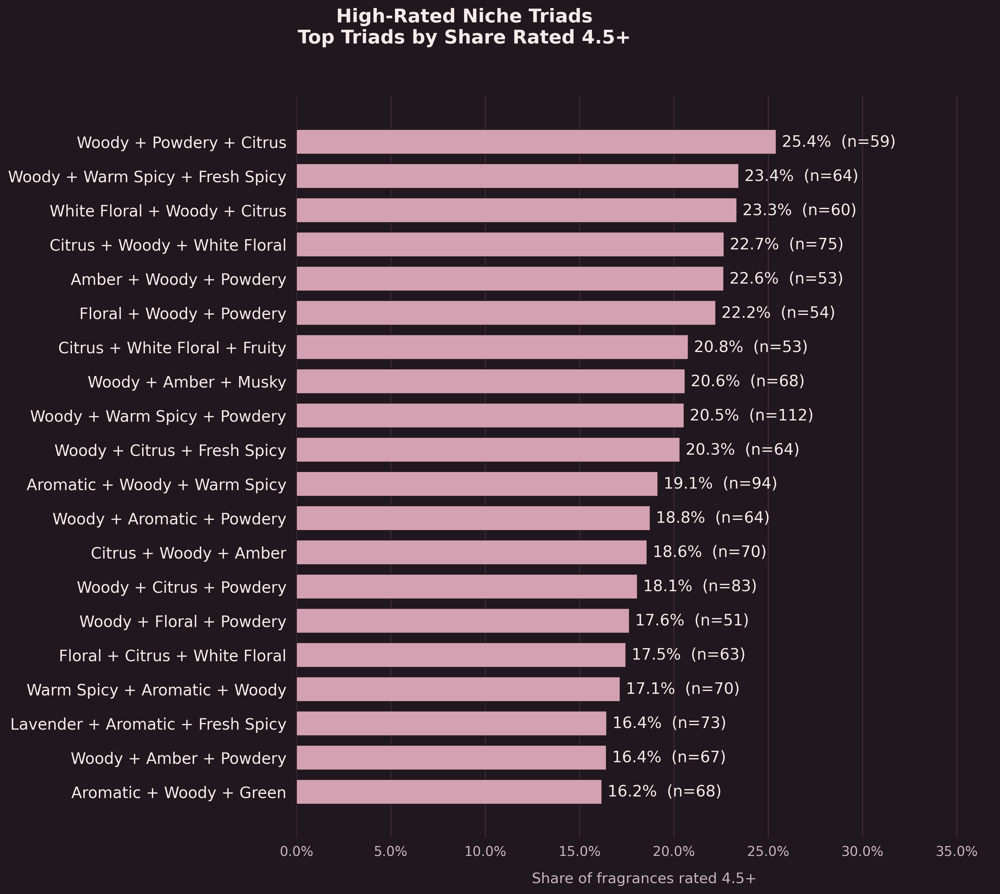
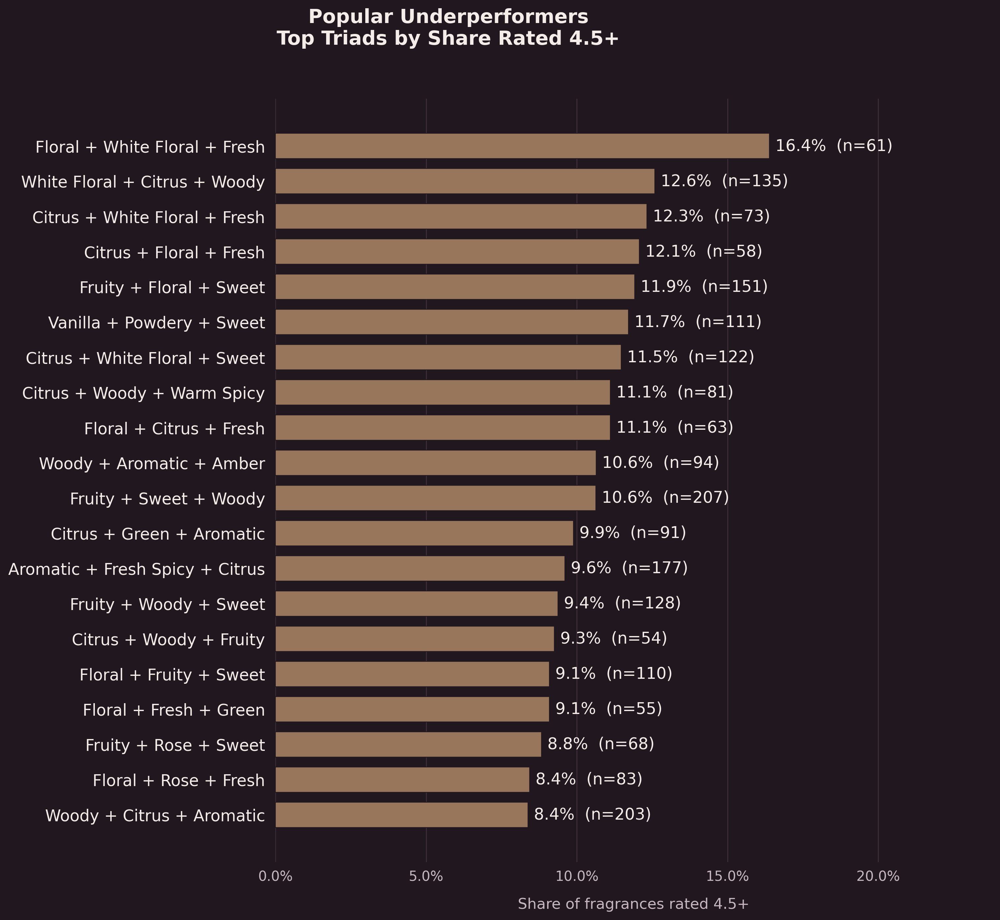
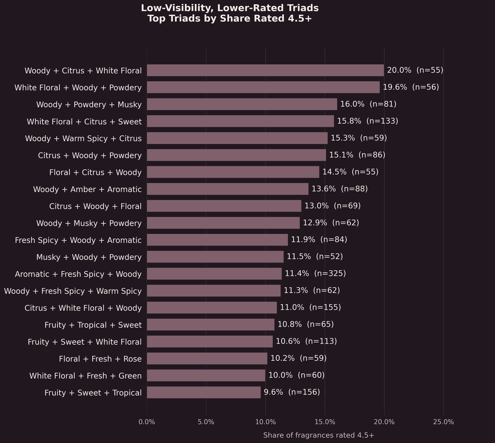

Pair segmentation overview
The full distribution of eligible ordered pairs across the four descriptive segments.

FRAGRANCE DATA · ORDERED ACCORD COMBINATIONS
A closer look at combinations of fragrance accords, grouped by community attention and average ratings. Pair results come first, followed by triads, with each analysis using its own reference medians.
PART ONE · TWO-ACCORD COMBINATIONS
Each ordered pair keeps the source order: the dominant accord followed by the secondary accord. The four segments distinguish combinations with relatively high or low average ratings and community attention.
Pair analysis reference medians: 3.975 for mean rating and 220.09 for mean votes per fragrance. The charts use these medians to separate higher- and lower-rated combinations and higher- and lower-visibility combinations.
The full distribution of eligible ordered pairs across the four descriptive segments.

Pairs above the reference medians for both average rating and average votes per fragrance.

Pairs with above-median average ratings but below-median average votes per fragrance.

Pairs with above-median average votes per fragrance but below-median average ratings.

Pairs below both reference medians for average rating and average votes per fragrance.

| Pair segment | Number of pairs | Median fragrance count | Average rating | Mean votes / fragrance |
|---|---|---|---|---|
| Popular performers | 43 | 200 | 4.041 | 318.80 |
| High-rated niche pairs | 31 | 201 | 4.029 | 162.94 |
| Popular underperformers | 31 | 269 | 3.934 | 281.48 |
| Low-visibility, lower-rated pairs | 42 | 183 | 3.924 | 176.20 |
PART TWO · THREE-ACCORD COMBINATIONS
The same four-part framework is applied to ordered combinations of three accords. Triad results are shown after the complete pair analysis so each level can be explored on its own.
Triad analysis reference medians: 3.954 for mean rating and 191.49 for mean votes per fragrance. These thresholds are calculated separately from the pair medians, so pair and triad segments should not be compared as if they shared one scale.
The full distribution of eligible ordered triads across the four descriptive segments.

Triads above the triad-specific medians for average rating and average votes per fragrance.

Triads with above-median average ratings but below-median average votes per fragrance.

Triads with above-median average votes per fragrance but below-median average ratings.

Triads below both triad-specific reference medians for average rating and average votes per fragrance.

| Triad segment | Number of triads |
|---|---|
| Popular performers | 39 |
| High-rated niche triads | 41 |
| Popular underperformers | 41 |
| Low-visibility, lower-rated triads | 38 |
HOW TO READ THE SEGMENTS
These groups are descriptive tools for exploring the dataset, not claims about sales or causal drivers of fragrance ratings.
Community attention: mean votes per fragrance is used as a proxy for how much attention a combination receives in the source ratings data. It is not a measure of sales, market share, or commercial performance.
Ordered combinations: pair and triad order follows the accord sequence in the source data. Reversing the order represents a different combination.
Separate baselines: pairs and triads use their own median rating and mean-vote thresholds. A segment label describes a combination relative to its own analysis population.
Descriptive results: a fragrance may contribute to more than one combination, and segment membership does not imply that one accord causes a higher or lower rating.